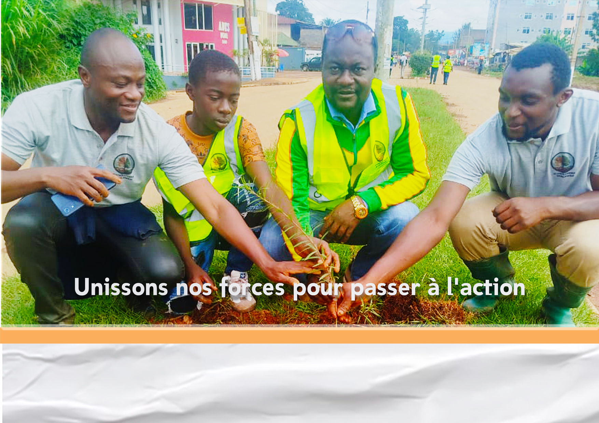
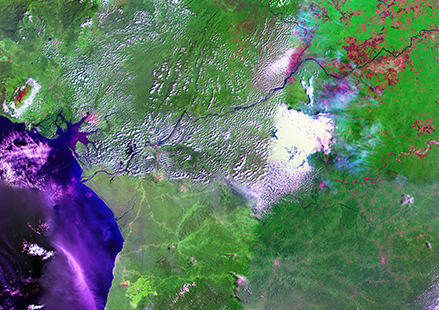
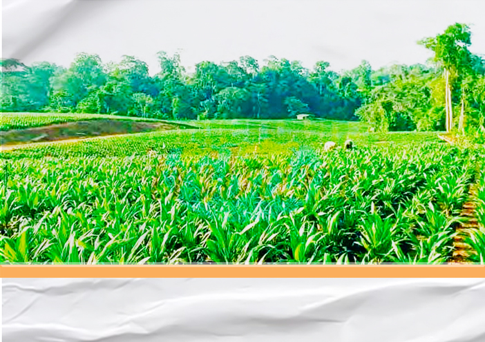
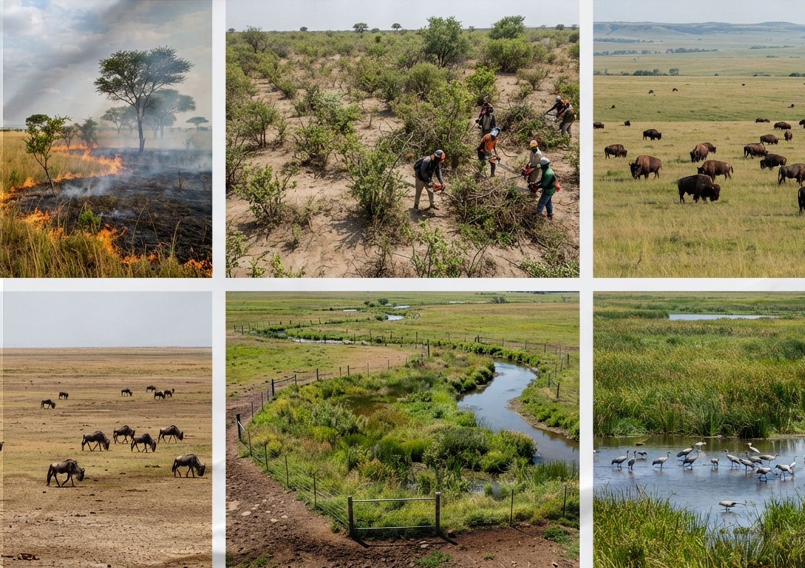
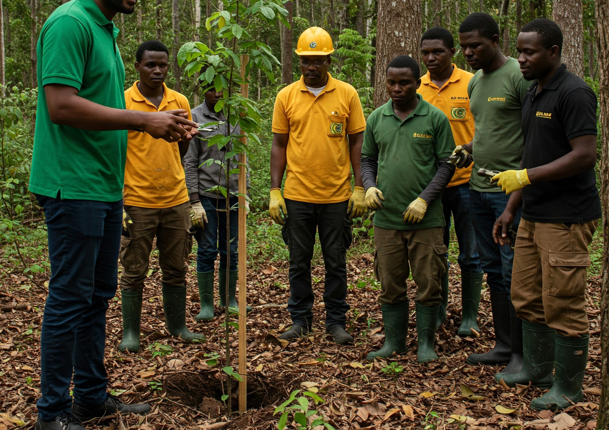

Découvrez l'étendue de nos interventions sur le terrain et en laboratoire.

Services dédiés à la restauration des écosystèmes dégradés et à la promotion active de la biodiversité faunique et floristique.

Exploitation des technologies spatiales avancées pour l'analyse précise, le suivi et la gestion continue des écosystèmes.

Encouragement de l'agriculture durable et intégration de pratiques agricoles strictement respectueuses de l'environnement.

Programmes visant à sensibiliser et former les populations locales aux pratiques écologiques et à l'entrepreneuriat vert.

Facilitation des collaborations institutionnelles pour le partage des connaissances et des meilleures pratiques en durabilité.
Échangez sans délai avec notre équipe technique basée à Dschang pour structurer votre projet environnemental.
Discuter sur WhatsApp